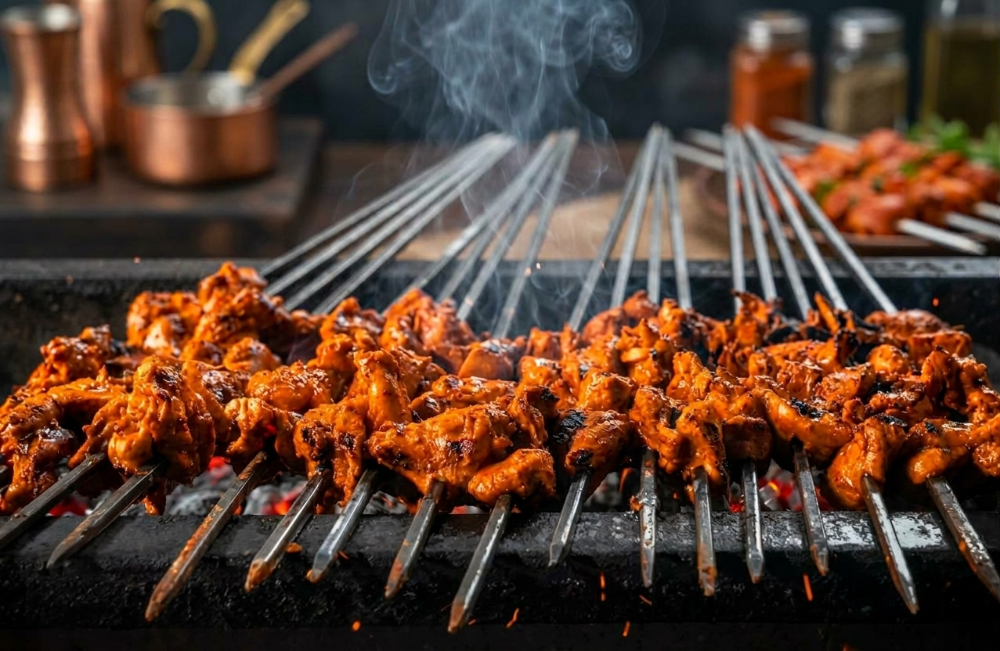
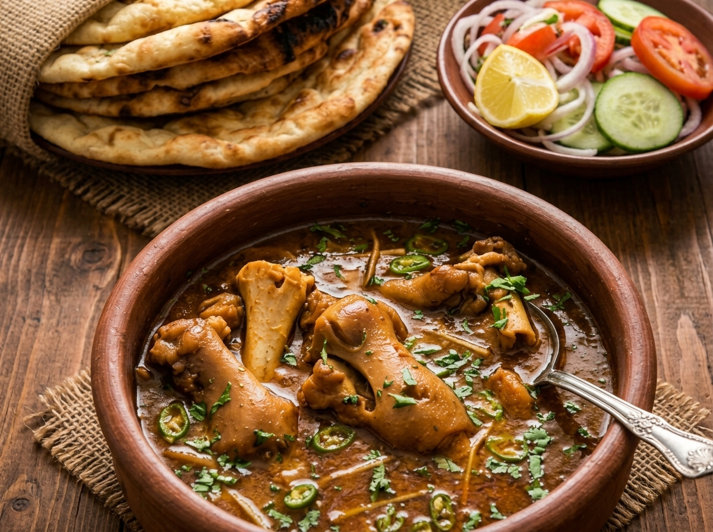

Home | Famous Places | Famous Food
Chicken pieces marinated in spices and grilled over charcoal.

A rich, slow-cooked dish made from goat head and trotters, eaten for breakfast.

Our local food street is rated 5th best food street in the region.
Drink plenty of water (H2O) with spicy food!